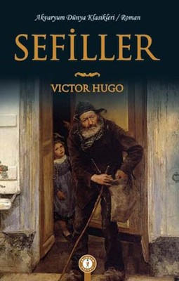
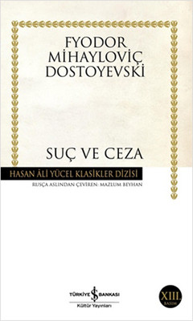
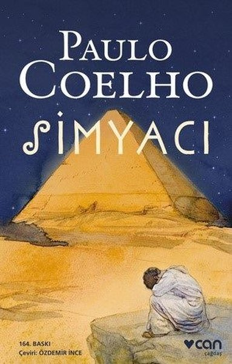

Popüler Kitaplar

Sefiller
Victor Hugo'nun klasikleşmiş başyapıtı, insanın iyilik ve kötülük arasındaki mücadelesini anlatıyor.

Suç ve Ceza
Dostoyevski'den derin bir psikolojik roman. Raskolnikov'un iç dünyasını keşfetmeye hazır olun.

Simyacı
Paulo Coelho'nun ilham verici romanı, kendi yolculuğunuza ışık tutacak.

1984
George Orwell'in distopyası, özgürlük ve otorite kavramlarını sorguluyor.

Bir Ömür Nasıl Yaşanır
İlber Ortaylı'dan hayatınıza yön verecek bir rehber kitap.

Hayvan Çiftliği
George Orwell'den modern toplumun eleştirisi. Kesinlikle okunması gereken bir başyapıt.